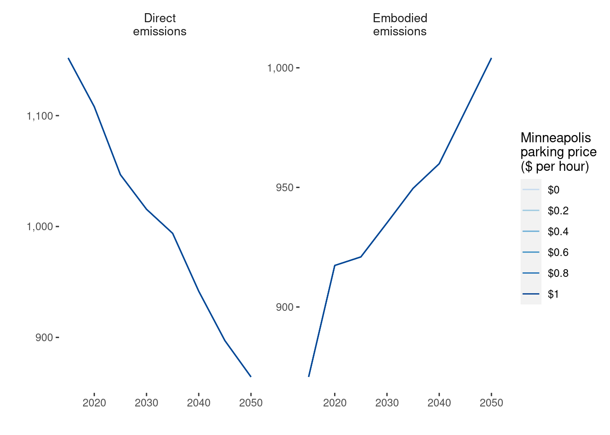

4 Transportation

The Metropolitan Council Transportation Policy Plan notes that the rapid expansion of the region’s developed area in an “auto-centric” manner has resulted in longer average trips and the diminished attractiveness of non-auto modes as modes of regional travel. The issue of longer and more frequent automobile trips contributes to the challenge of reducing greenhouse gas emissions.
Instead, when land use and transportation systems are designed to work together, they can create more efficient and sustainable communities. For example, compact, walkable communities with a mix of land uses can reduce the need for driving and improve the transportation system’s efficiency.
4.1 Framework
Ramaswami, Fang, and Tabory (Ramaswami, Fang, and Tabory 2020) provide a framework for urban planning tools for greenhouse gas (GHG) mitigation as shown in as four key levers of action based on the framework developed in previous work by the UN International Resource Panel (Swilling et al. 2018).
It is found that transit and car-sharing become cost-effective beyond a density of 35 dwelling units per acre (Santasieri 2014) and 5-10 dwelling units per acre (Millard-Ball 2019), respectively.
4.2 Transportation Baseline and Data
The Council is in the process of verifying data sources for all inputs and values.
The inputs for the transportation sector baseline and forecast are:
- Passenger Miles Traveled (PMT) forecasts from Metropolitan Council Regional Transportation Demand Model (RTDM).
- The Transportation Demand Model A transportation demand model is a tool that is used to predict how people and goods will move within a transportation system. It can be used to forecast the demand for different modes of transportation, such as cars, buses, trains, and planes, and to evaluate the impacts of different transportation policies and investments.
- Average vehicle occupancy by mode
- MA3T stock turnover and adoption forecasts by “powertrain”: SI (spark ignition gasoline) vehicles, CI (combustion emissions diesel) vehicles, hybrid-electric vehicles (HEVs), plug-in hybrid-electric vehicles (PHEV), and battery-electric. MA3T stands for Market Acceptance of Advanced Automotive Technologies (MA3T) and it allows to simulate the diverse purchasing behaviors among individuals in the market place.
4.2.1 Annual Energy Outlook (AEO)
In addition to the inclusion of the strategies outlined, alternative future scenarios are adopted from the EIA Annual Energy Outlook.
The inclusion of these scenarios allows the user to easily consider uncertainty in global financial and energy markets. The AEO scenarios are included as variations in fuel economy and VMT by mode. The following AEO scenarios are included in the tool (“Annual Energy Outlook” 2021).
- High oil price the price of Brent crude oil, in 2020 dollars, reaches $173 per barrel by 2050 compared with $95 per barrel in the reference case.
- Low oil price the price of Brent crude oil, in 2020 dollars, drops to $48 per barrel by 2050 compared with $95 per barrel in the reference case.
- High economic growth U.S. GDP grows by 2.6% per year compared with 2.1% in the reference case.
- Low economic growth U.S. GDP grows by 1.6% per year compared with 2.1% in the reference case.
The AEO analysis includes two additional scenarios representing high and low renewable cost cases, respectively. We do not consider these cases as we rely on Xcel Energy electricity grid forecasts in the tool and variation in renewable prices would affect these assumptions.
4.2.2 Passenger
The Twin Cities region relies heavily on private cars for transportation, with options including gasoline, diesel, hybrid electric-gasoline, plug-in hybrid electric-gasoline, and battery electric vehicles.
The region’s transportation carbon emissions are calculated based on data on vehicle usage, average vehicle occupancy, and person miles traveled by mode. Public transit options include urban and interurban buses and rails, with the option to switch to electric power in the future. Public transit mode shares are estimated using definitions from the 2019 Travel Behavior Inventory (TBI), but there are no estimates of transit vehicle turnover to the 2050 forecast year.
The dominant mode of passenger transportation in MSP is the private car (i.e., passenger light-duty vehicle). Powertrain types included in the tool for this mode are gasoline, diesel, hybrid electric-gasoline (HEV), plug-in hybrid electric-gasoline (PHEV), and battery electric (BEV).
Public transit modes are categorized as urban bus, bus rapid transit (BRT), urban rail (LRT), and interurban rail (Northstar commuter rail). Bus modes have fuel options of biodiesel, hybrid electric-biodiesel, and battery electric. The LRT is already run by electricity and it is assumed that use of this technology will continue. The Northstar commuter rail currently uses biodiesel as an energy feedstock, but the option is available in the tool to switch it to an electric powertrain by 2050.
In the case of PHEV, there is a need to consider the fraction of VMT driven in electric and gasoline modes. It is assumed that the average travel distance in electric mode for a PHEV is 30 miles (Loveday 2019) and that households only recharge vehicles at night. Using these assumptions, the fraction of time operating in gasoline mode can be estimated based on 2019 TBI data for household vehicle usage for each CTU.
The regional model provides PMT totals for auto, transit, bike, and walk modes. PMT by mode is allocated to CTU using the standard 100-50-50 method given in the GHG Protocol for Cities (The World Resources Institute 2012). That is, 100% of PMT for trips that start and end in the same CTU is allocated to that CTU. Otherwise, 50% of PMT is allocated to each of the trip start CTU and trip end CTUs. A factor of 340 is used to convert daily PMT into annual PMT based on the recommendation of the Carbon Free Boston study (Porter et al. 2019).
4.2.3 Freight
The Twin Cities region is a critical transportation hub for the upper Midwest, serving as a distribution center for Minnesota, Wisconsin, North and South Dakota, and eastern Montana. The region is served by five modes of freight transportation: trucks, railroads, barges, air freight, and pipelines. These modes play a crucial role in supporting the region’s economic competitiveness and quality of life by allowing residents to access the goods and materials they need and enabling businesses to distribute their products.
The region’s freight transportation system is facing challenges, including congestion, lack of capacity, and infrastructure deficiencies, which need to be addressed to ensure the system’s continued effectiveness. The Metropolitan Council works closely with the Minnesota Department of Transportation and other partners to ensure that the regional freight system supports a thriving and sustainable economy. Many freight-related improvements are the responsibility of private owners and operators of transportation modes and freight terminal facilities, although public investments in infrastructure also play a role.
4.3 Transportation Baseline and Forecast
| Mode | Value | year |
|---|---|---|
| Passenger light duty vehicle | 3,879,556 | 2018 |
| Passenger light duty vehicle | 3,669,647 | 2040 |
| Active transportation (walk and bike) | 316,757 | 2018 |
| Active transportation (walk and bike) | 347,165 | 2040 |
| Urban bus (standard, non-BRT bus) | 220,289 | 2018 |
| Urban bus (standard, non-BRT bus) | 241,437 | 2040 |
| Bus rapid transit | 5,126 | 2018 |
| Bus rapid transit | 5,618 | 2040 |
| Urban rail | 78,635 | 2018 |
| Urban rail | 86,183 | 2040 |
| Intercity rail | 12,707 | 2018 |
| Intercity rail | 13,927 | 2040 |
| Walk | 105,340 | 2018 |
| Walk | 133,347 | 2040 |
| Bike | 67,247 | 2018 |
| Bike | 71,290 | 2040 |
| School bus | 37,683 | 2018 |
| School bus | 53,755 | 2040 |
| Mode | 2018 | 2040 |
|---|---|---|
| Combined unit truck | 684,122.58 | 937,773.0 |
| Single unit truck | 228,815.33 | 313,652.6 |
| Freight rail | 1,876,341.80 | 1,996,576.3 |
| Multi-modal freight (combination of truck and rail) | 441,925.81 | 655,486.4 |
| Air freight | 7,867.95 | 20,451.3 |
| Water freight | 0.00 | 0.0 |
Embodied Emissions
Embodied emissions are a significant but often overlooked aspect of reducing carbon emissions in transportation from manufacturing and maintaining vehicles and infrastructure. Different vehicles and modes of transportation have different levels of embodied emissions. The GHG Tool in this study estimates embodied emissions for various types of passenger vehicles, public transit, and school buses based on an analysis by Chester and Horvath ((Chester and Horvath 2009)) and other sources. The tool considers the emissions resulting from manufacturing, maintenance, tire production, and other factors over the vehicle’s lifetime. It does not currently estimate embodied emissions for freight vehicles as data on their stocks and sales is not available for the study area.
4.4 Interventions/Strategies
The transportation module uses passenger miles traveled as a proxy for emissions. Miles traveled are calculated for each travel mode and then converted into emissions.
4.4.1 Land Use
Transportation and land use policies are reliant on each other. Segregated and low-density land use patterns lead to a reliance on automobiles, increased vehicle miles traveled, and decreased efficacy of shared travel. However, altering land use policy is complex and only sometimes leads to changes in land use, as construction takes time to catch up with zoning. The scenario planning model uses the “five D’s” (population and employment density, diversity of land uses, street design, distance to transit, and destination accessibility) as the land use factors that affect transportation.
The Metropolitan Council Transportation Policy Plan discusses the need for communities to consider the connections between land use and transportation as the region changes in the coming years. The plan mentions that it is not feasible to expand the highway system in a sustainable manner and that there is increased private investment in already developed parts of the region along transit lines. The Transportation Policy Plan also mentions that higher-density development and redevelopment occur in already-developed areas. That new growth is happening in suburban edge and emerging suburban edge communities, which stresses the regional highway system. The plan suggests that planners incorporate multimodal travel options, such as transit, walking, and biking, into land use and design to address issues like congestion, climate change, equity, and livability.
Increasing density decreases travel distances and encourages transit, cycling, and walking. We estimate a 0.4% decrease in auto VMT for a 10% increase in population density by 2040, a 7% increase in walking/cycling VMT for a 10% increase in population density by 2040, and a 7% increase in transit VMT for a 10% increase in population density by 2040.
| Land Use Adjustment | Multiplier relative to BAU | Effect on miles traveled by 2050 |
|---|---|---|
| Drive | ||
| Population density | +10% | -4% |
| Employment density | +10% | +0% |
| Land use diversity | +10% | -9% |
| Intersection design | +10% | -12% |
| Job accessability by transit | +10% | -20% |
| Distance to transit | -10% | -5% |
| Walk | ||
| Population density | +10% | +7% |
| Employment density | +10% | +4% |
| Land use diversity | +10% | +15% |
| Intersection design | +10% | -6% |
| Job accessability by transit | +10% | -6% |
| Distance to transit | -10% | +15% |
| Transit | ||
| Population density | +10% | +7% |
| Employment density | +10% | +1% |
| Land use diversity | +10% | +12% |
| Intersection design | +10% | +29% |
| Job accessability by transit | +10% | +12.8% |
| Distance to transit | -10% | +29% |

4.4.2 Vehicle Electrification
The Greenhouse Gas Scenario Planning Tool aims to assess the potential impact of electric vehicles on greenhouse gas emissions in the Twin Cities metropolitan region.
The Tool uses data from the Market Acceptance of Advanced Automotive Technologies model to forecast electric vehicle market penetration in the region, and considers the GHG intensity of the region’s electricity grid in calculating the GHG impact of electric vehicles.
The Tool also accounts for the fact that plug-in hybrid electric vehicles may operate in both electric and gasoline modes, and estimates the fraction of time that these vehicles operate in each mode based on the average distance that they can travel on electric power and data on household vehicle usage. The tool aims to provide insight into the potential for electric vehicles to reduce GHG emissions in the region and inform policy decisions related to electric vehicle adoption.

4.4.3 Public Transit
According to the Minneapolis Transportation Action Plan (TAP), transit is essential for the city’s multimodal transportation system. Transit contributes to economic competitiveness by attracting businesses, private investment, and top talent. Over 30,000 (16.5%) households in the city do not have access to or choose not to own a personal car, with the highest concentration of car-free individuals living in neighborhoods around downtown Minneapolis. The TAP aims to improve the coverage, speed, and reliability of transit service through a partnership with the Metropolitan Council and by defining clear priorities, goals, and actions for the city. The goal is to increase the number of transit trips from 13% in 2019 to 25% by 2030. Transit must be convenient, reliable, and frequent and effectively reduce trips made by single-occupancy vehicles to achieve these goals.

4.4.4 Telework
Telework is working from home, reducing or eliminating the need to commute. In 2020, an estimated 35% of jobs in the United States could be performed from home, varying by metropolitan area. In Minneapolis and St. Paul, approximately 38-52% of jobs can be completed through telework.1 In a first approximation, telework eliminates commute vehicle miles traveled, which can reduce greenhouse gas emissions. However, the net effect on vehicle miles traveled, and household greenhouse gas production must also be considered. Recent studies that include energy associated with working from home find an effective reduction of about 2.5-3% in household CO2 emissions per telework day.
Figure ?? could be a static or interactive figure. Some questions about the parameters/results 1) Unclear why teleworking doesn’t impact emissions? Look inside the data-raw folder at the “CityReportTransData.R” script to see where/how I got these numbers if any troubleshooting needs to happen.

4.4.5 Road Pricing
In the future, road pricing will likely be an essential component of transportation policy. Road pricing is key for automated vehicles and dynamic ride-sharing policies because it helps address the increased vehicle miles traveled projected to occur with adopting these technologies. Furthermore, road pricing provides an alternative revenue stream to the gas tax as vehicle efficiency increases and electric vehicle adoption grows.
The scenario planning model includes three alternatives for road pricing. The first is a vehicle miles traveled (VMT) fee that charges for each mile of travel. The second is a pay-as-you-drive insurance plan. Finally, the model includes a representation of congestion pricing. Ideally, congestion price should vary between the time of day and road link based on the current congestion level, but this is infeasible to model. Instead, an elevated VMT fee is applied to a portion of travel, approximating the percent of congested VMT. Credit-based congestion pricing is recommended as a revenue-neutral strategy to address equity in road pricing. It provides credits to travelers who shift their travel model or departure time.
Figure ?? could be a static or interactive figure. However, nothing seems to matter…

4.4.6 Parking Policy
Parking is an important component of the transportation system. A lack of parking can result in additional VMT from vehicles searching for a parking spot (up to 30% of vehicles in downtown traffic (Shoup 2006)). Surface lots and parkades take up valuable space that could be put to more useful purposes.
The most common strategies for controlling parking demand are increasing its price and restricting the time that parking is available. These strategies have been reviewed in detail and price elasticities are available for the price of parking on VMT (see Table 4.4).
The long-run elasticity of VMT to parking cost is estimated to be in the range of -0.18 to -0.45, with a mean of 0.07 based on a meta-analysis of values reported in the literature (Lehner and Peer 2019).
\[\begin{equation} adj_{park} = 1 + \frac{price_{y}}{price_{y = 2018}} \times elast_{park_{m}} (\#eq:parking_price_adj) \end{equation}\]
\(price_y\) is the price of parking on dollars per hour in year \(y\)
\(price_{y = 2018}\) is the price of parking in dollars per hour in 2018
\(elast_{park}\) is the elasticity or effect size of parking price increase on travel mode \(m\).
Values derived from TRACE (1999) and referenced in Litman (2021) and Lehner and Peer (2019).
| Mode | Increase in parking price relative to baseline | Effect on miles traveled by 2050 |
|---|---|---|
| Automobile | +10% | -7% |
| Walking and cycling | +10% | +3% |
| Transit | +10% | +1% |
| TRACE 1999 | ||
Figure ?? could be a static or interactive figure. However, nothing seems to matter…
